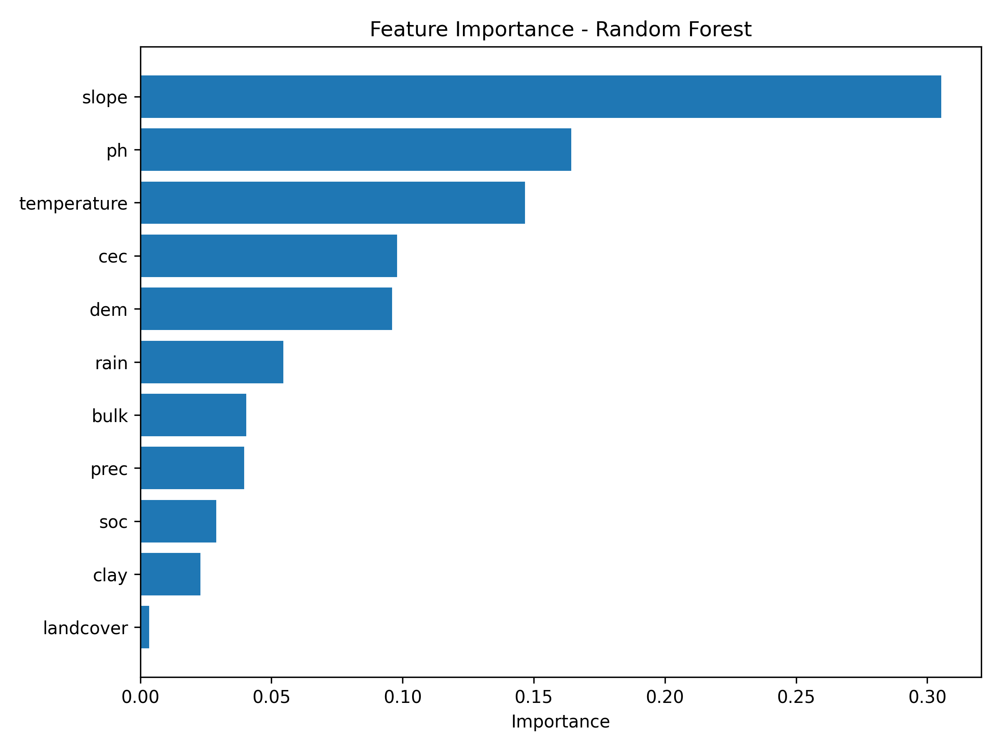

Evaluasi Model Random Forest
Evaluasi performa model Random Forest dalam mempelajari label kesesuaian lahan berbasis data spasial.
Model Random Forest digunakan untuk meningkatkan stabilitas klasifikasi dengan pendekatan ensemble learning menggunakan banyak decision tree dalam proses prediksi kesesuaian lahan.
Feature Importance
Grafik berikut menunjukkan tingkat kontribusi masing-masing variabel terhadap proses klasifikasi yang dilakukan oleh model Decision Tree.

| Aktual \ Prediksi | N | S1 | S2 | S3 |
|---|---|---|---|---|
| N | 32 | 0 | 1 | 1 |
| S1 | 0 | 78 | 2 | 0 |
| S2 | 0 | 0 | 331 | 2 |
| S3 | 1 | 0 | 4 | 95 |
Random Forest menunjukkan performa klasifikasi yang lebih stabil dibandingkan Decision Tree karena menggunakan pendekatan ensemble learning yang mampu mengurangi overfitting dan meningkatkan generalisasi model.
Model Random Forest menghasilkan akurasi sebesar 97.99%, precision 97.99%, recall 97.99%, dan F1-score 97.98%. Nilai tersebut lebih tinggi dibandingkan Decision Tree pada seluruh metrik evaluasi. Selain itu, hasil cross validation 5-fold menunjukkan nilai rata-rata akurasi sebesar 98.57% dengan standar deviasi 0.45%, yang mengindikasikan bahwa model memiliki performa yang stabil dan konsisten pada berbagai subset data. Berdasarkan hasil tersebut, Random Forest dipilih sebagai model terbaik untuk klasifikasi kesesuaian lahan kelapa sawit di Pulau Sumatra.